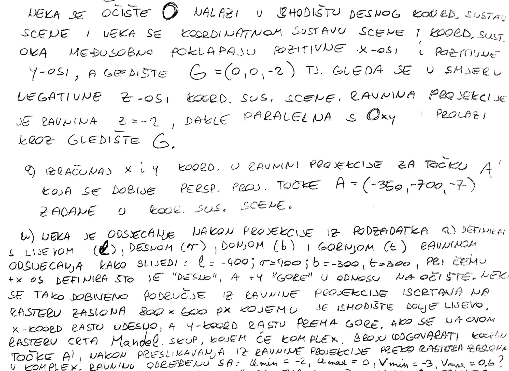

latica na ferko imas wiki sa zadacima, na materijalima na studosima imas pdf sa postupcima tih zadataka. Onda stari ispiti pa kolko stignes
VolimStopala🇻🇦🇭🇷 znaci ni prezentacije ni knjigu se ne isplati gledat ako je cilj sto brze naucit za prolaz?
VolimStopala🇻🇦🇭🇷 koji je link tih zadataka? ferko -> katalog zadataka mi otvara prazan frame
 Zna li netko kako se rijesava ovaj?
VolimStopala🇻🇦🇭🇷 Jel saznao netko kako se ovaj radi?
Ulazi li gradivo međuispita u završni?
Matt da
garica Za prezentacije/video predavanja bih rekao da se općenito ne isplati gledati. Knjiga je super, samo ne ako si u kritičnoj situaciji s vremenom
garica prezentacije ne sluze nicemu po mom osobnom misljenju, jedino formule iz njih su bitne
latica Moja taktika:
Sritno
Sicsile ne
Jel itko naisao na bilo kakav zadatak s razlomljenim funkcijama?
Tfw ti fali trećina za prolaz a nisi siguran hoćeš li i to zadovoljiti…
Jesu rekli kad ce ispravit
Sicsile cudi me da teorija jos nije stigla 🤔